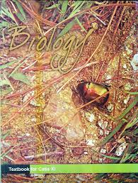

Youtube videos
Click the logo beside to logout.
Chp:1.
The Living World
Chp:2.
Biological Classification Part-1
Chp:2.
Biological Classification part-2
Chp:3.
Plant Kingdom Part-1
Chp:3.
Plant Kingdom Part-2
Chp:4.
Animal Kingdom
Chp:5.
Morphology of FLowering plants Part-1
Chp:5.
Morphology of FLowering plants Part-2
Chp:6.
Anatomy of flowering plants Part-1
Chp:6.
Anatomy of flowering plants Part-2
Chp:7.
Structural Organization in Animals
Chp:8.
Cell:The Unit of Life Part-1
Chp:8.
Cell:The Unit of Life Part-2
Chp:9.
Biomolecules Part-1
Chp:9.
Biomolecules Part-2
Chp:10.
Cell cycle and division
Chp:11.
Transport in plants
Chp:12.
Mineral Nutrition
Chp:13.
Photosynthesis in Higher plants
Chp:14.
Respiration in Plants
Chp:15.
Plant Growth and Development
Chp:16.
Digestion and Absorption
Chp:17.
Breathing & Exchange of Gases
Chp:18.
Body Fluids & Circulation
Chp:19.
Excretory products and their Elimination
Chp:20.
Locomotion and Movement
Chp:21.
Neural Control & Coordination
Chp:22.
Chemical Coordination & Integration